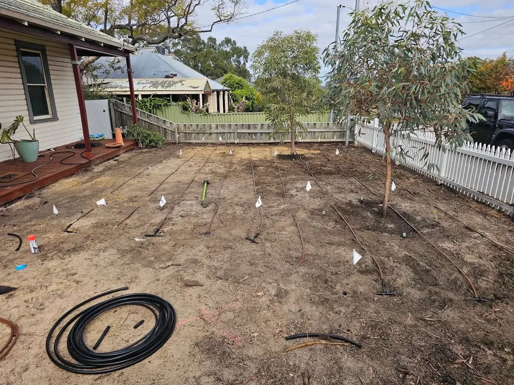
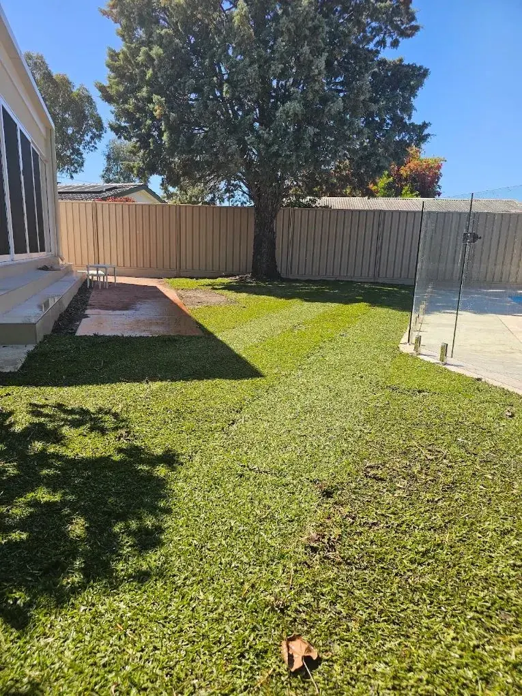

Home / Retic installs
Reticulation installs
New retic designed around your yard, your water pressure and your watering days, so every part of the garden gets what it needs and nothing more.
A system designed, not guessed
We check your water supply and pressure first, then zone the yard so lawns, beds and pots each get the right type of watering.
That means fewer dry patches, less runoff onto paths, and lower water use.
What’s included
- Site check and water pressure test
- Zoning plan for lawns, beds and pots
- Sprays, rotors or drip to suit each area
- Smart controller supplied and programmed
- Neat trenching and full clean-up
- Walkthrough of your controller before we leave
How it works
Send photos
Text photos and your address to 0421 308 173. No waiting in for a site visit.
Get your quote
A clear quote the same day for most jobs. You approve, we book you in.
We do the work
On time, tidy, with commercial-grade equipment.
Photo report
Before and after photos when we’re done, with your invoice.
Why us
- Retic is our specialty, not a side service
- Systems set up for Perth watering rules
- Photo report when the job’s done
- Clear quote before any work starts
“We had a reticulation system installed and couldn’t be happier. The whole process was easy from start to finish, great communication, very fair pricing, and the job was done efficiently and to a high standard.”
Marina G. Google review
From trench to lawn

